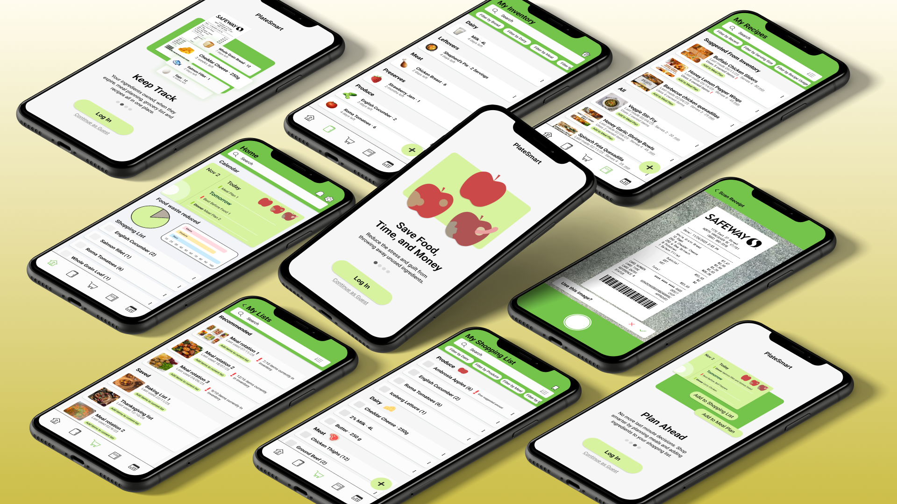
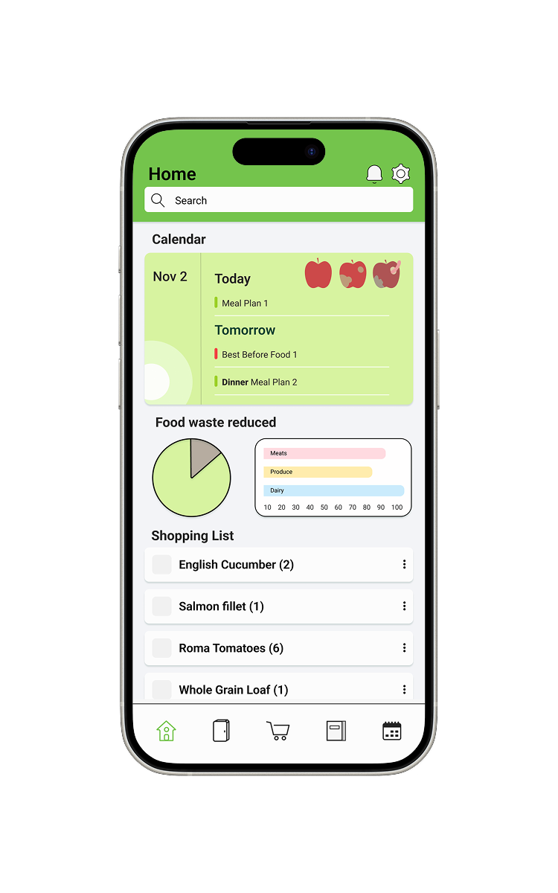
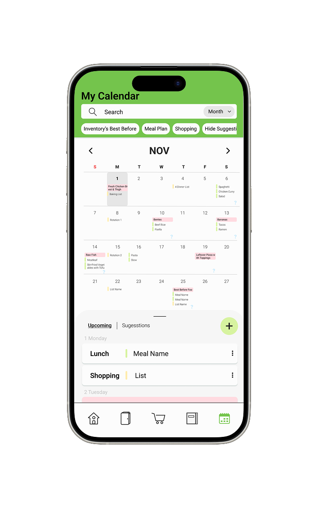
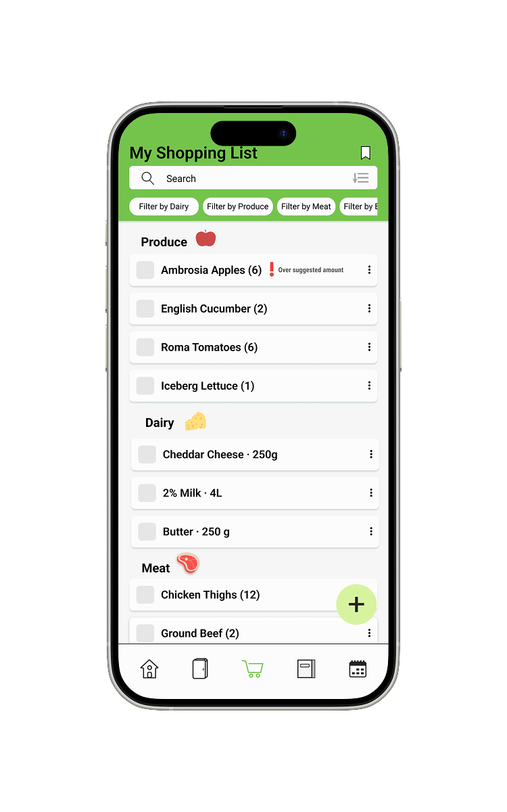
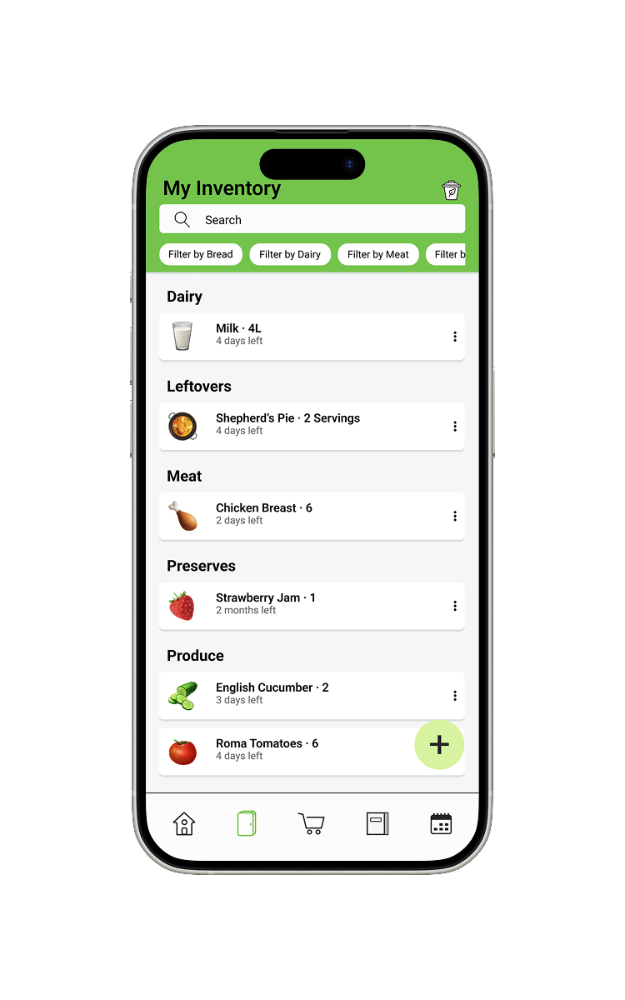
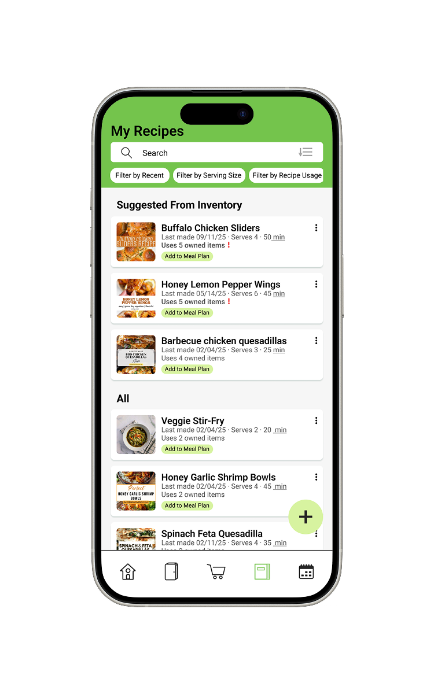
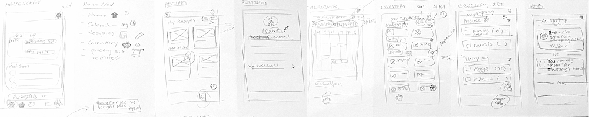

Problem
When throwing out food, people overwhelmingly feel bad or guilty for the money lost and food wasted. But, buying the right amount, remembering what you already own, and coming up with meals is a lot of work. Since people have a myriad of other responsibilities like school and work, planning feeding oneself and one’s family can get neglected even though it’s so important.
Outcome
Utilizing existing app conventions like in the calendar and filters, we created an interface which connects to existing mental models to reduce cognitive load in the early stages of use. In order to support user goals of saving time, money and food, we created a simple but effective meal planning and food tracking app based around buying more intentionally and lessening the mental load of thinking of what to eat every day suitable for single-person households or those with multiple people.
My Role
- Product Designer
Team
- Hedia
- Meghan
- Narinder
Timeline
- 8 weeks total
- Secondary Research & Concept
- Design & Production
Tools
- Figma
Key Features
The app aims to reduce household food waste by helping people keep track of how much they own, putting all the information people would usually try and remember themselves in one place through the Inventory, Shopping List, Recipes, and Calendar features.

Home Screen
Catch up at a glance: the embedded Calendar shows what foods’ best before dates are approaching, quick stats about how much you used of what you’ve bought, and a preview of the shopping list for easy access. Also, see notifications if someone in your household has checked something off your grocery list, saving you the trip.

Calendar
View upcoming meals and foods with approaching best before dates. In tandem with the recipes function, add recipes to your meal plan. Add suggested shopping trips to your calendar and get reminders to never forget to restock.

Shopping List
When shopping, check off items and automatically send alerts to household members. Add and remove items from your shopping list. Used saved lists for repeating groups of meals.

Inventory
All the food you own and its best before date. Easily add items from your shopping receipt using the scan function, or add manually for single item purchases. View your compost bin, or the items you had to discard to better understand your food usage habits.

Recipes
View your recipe collection. When viewing recipes, symbols next to ingredients symbolize if you own the ingredient, if it’s expiring or if you don’t own it. Add recipes to the meal plan.
Process
Personas and Journey Maps
First, we researched our domain and context of household food waste and discovered that unanimously, people feel bad when throwing food away, negatively impacting their mental states. Countless forum posts illustrate how people express feeling guilty and frustrated at themselves for wasting food and money.
Then, we created two personas to represent different lifestyles: a student living alone, and a working parent tasked with providing meals for their family.
The biggest takeaway was in both scenarios, the app containing information about food owned making it accessible from anywhere reducing the amount of guessing during shopping. Moreover, since the users are often rushed, the app should be easy to use and learn. By using common elements found in other apps to connect to their mental models, users will have to put in less effort to learn to use the app.
